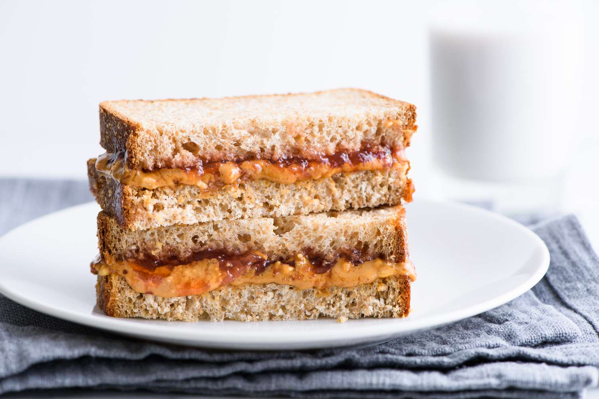

A classic sandwich that many grew up with, best served with a glass of milk.
- 2 slices of bread (white,wheat,cheddar,etc.)
- Jelly (grape, strawberry, jellyfish, etc.)
- Peanut butter or Nut butter of your choice
- Place each slice of bread on a plate
- Use a butter knife and spread Peanut/nut butter on 1 of the slices of bread
- Use a spoon to scoop out the desired amount of jelly and use the bottom side to spread it on the other slice of bread(To make spreading the jelly easier try stirring the desired amoount of jelly in the jar to break it down before scooping it out)
- put both slices of bread together making sure the jelly side touches the peanut/nut butter side. Serve with milk and enjoy!